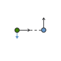

## Equation that explains everything
---
In electricity, many different equations are used to describe the behavior of current, rather than a single, unified model based on electron interactions.
For example:
- Coulomb's Law is used to calculate the force between two static charges.
- Ampère's force law and the Biot-Savart law are needed to determine the force between two current-carrying wires or coils.
- Faraday's Law of Electromagnetic Induction describes the voltage generated by a changing magnetic field.
Instead of relying on these separate theories, I introduce a single model that directly determines the force between charges—and, as a consequence, it naturally produces the exact results of Ampère's force law, Biot-Savart law, and Faraday's Law combined.
Additionally, when using Ampère's force law and the Biot-Savart law to calculate the force between two coils, the positive charges of protons, which remain stationary, are completely ignored.
If we account for electrons with charge -q and velocity v, we should also consider protons with charge q and velocity v=0.
It's also unclear what reference frame we're using to measure the speed of the electron. What if both coils are moving at different speeds?
Furthermore, the "old method" has several issues, such as violating Newton's Third Law, which leads to a breakdown of global momentum conservation.
It also disrupts the conservation of angular momentum and violates energy conservation laws, making it mathematically possible, under certain conditions, to generate infinite energy.
For example the next situation:

Both particles are positivly charged.
The green particle goes right, and the blue particle goes up.
blue particle pushes green down,
and green particle doesnt creates any force at all on blue.
Its nonesense.